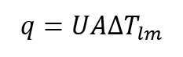

Project:Modeling a Nuclear Steam Generator using HTRI XIST Software
Simplified flow diagram of the nuclear power generation cycle. The primary side refers to the coolant flowing from the reactor to the steam generator, which is contained inside the tubes of the shell-tube heat exchanger. Similarly, the secondary side refers to the steam that is sent into the turbine, and water that comes from the condenser, or other sources.
Simplified drawing of the OTSG. The primary coolant is contained inside the tubes, such that there is no cross contamination. Tubes found to be damaged, are plugged on both ends such that there is no primary flow.
Heat transfer is governed by the following equation:
 Where:
q: Heat Duty Performed
U: Overall Heat Transfer Coefficient
A: Total Effective Surface Area
∆T_lm: Log Mean Temperature Difference (LMTD)
Where:
Subscript i and o refers to the tubes inner and outer surface respectively
h: Heat Transfer Coefficient
D: Tube Diameter
k: Thermal Conductivity of the Material
L: Height of Pool Boiling Zone
Rf: Fouling Factor/Resistance
1. Tube plugging is uniform and not clustered in localized areas.
2. Material properties of the heavy water moderator coolant are similar to that of light water. Since the HTRI XIST primarily uses these
properties to calculate the heat duty, conducting a primary side heat balance and overriding these inputs should be the same as
using heavy water material properties.
3. All heat transfer is to occur inside the tube bundle region. This assumption nullifies the effect of preheating through the
bleed port and maximizes the heat transfer in the pool boiling zone.
4. All steam leaving the SG is at saturation temperature. This assumption makes heat transfer in the superheat region negligible.
5. Primary pressure is fixed at 2000 psi. As changes in pressure make negligible impact on the enthalpy this will not affect the
results of the report.
6. The average primary coolant temperature is 500°F. The feedwater temperature entering the SG is 100°F.
The SG is dissipating 1% of the total reactor power, with 2 recirculating coolant pumps (RCPs) in operation.
The primary coolant flow rate is equal to 180,000 gpm. The process conditions defined above are selected for
comparative analysis only. Plant operation might show process conditions different than those defined above.
7. EOL conditions are to be used for this analysis.
8. Pressure drop across nozzles are considered to be negligible. See Note 1.
Notes:
1. Plant operators measure pressure drop across the SG by measuring the height of the liquid in the downcomer. As
seen in Figure 4, the downcomer is located downstream of the feedwater nozzle. Since this comparative analysis is
modeled to examine heat transfer in the tube bundle, pressure drop across the nozzles are irrelevant.
2. The difference in height in the downcomer region vs. the pool boiling zone is attributed to the reduced
material density inside the tube bundle. As opposed to the downcomer region which contains only liquid water,
the tube bundle region contains a 2-phase mixture of water.
Model to be used during the analysis. Steam leaving the steam generator are to be at saturation temperature.
The following methodology will be used during this analysis. Calculation performed during this analysis will be
conducted with the aid of HTRI XIST, MathCAD, and Excel. This methodology is to be repeated for all cases.
1. Typical Thermo-Hydraulic process conditions are selected. These process conditions are similar to those
used during normal plant operation.
2. A primary side heat transfer balance is conducted to determine the primary coolant mass flow rate, and the primary
inlet and outlet temperature. Similar methods are employed to determine the secondary side mass flow rate, along with
the Feedwater inlet, and steam outlet temperatures. The 4 temperatures are used to calculate the average tube wall temperature.
3. Thermal conductivity, and Young’s Modulus at the average tube wall temperature is calculated
4. The target hydrostatic pressure drop is determined.
5. Results from Steps 1-4 are inputted into the HTRI XIST program.
6. Steps 2-5 are repeated, with secondary side pressure, and pool boiling length being iterated to determine a solution. A solution
is achieved when the HTRI XIST output of overdesign (Actual Heat Transfer Coefficient/ Required Heat Transfer Coefficient) is equal
to less than 1%.